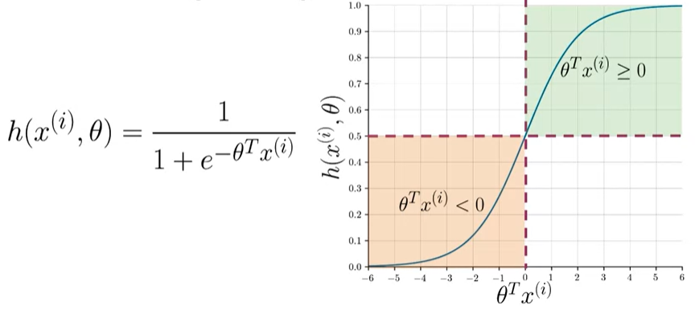
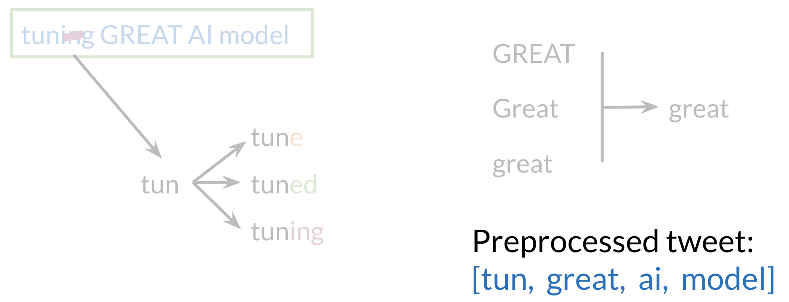
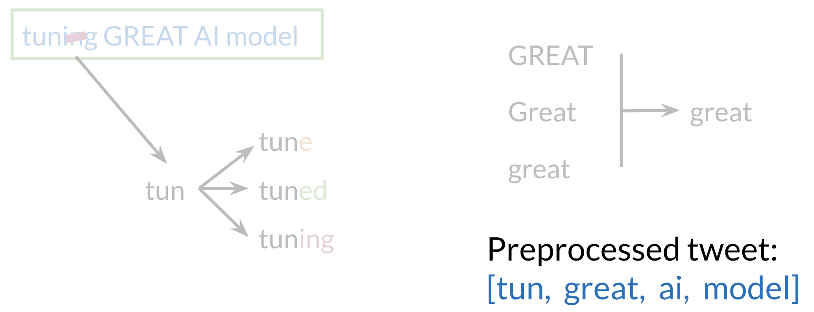
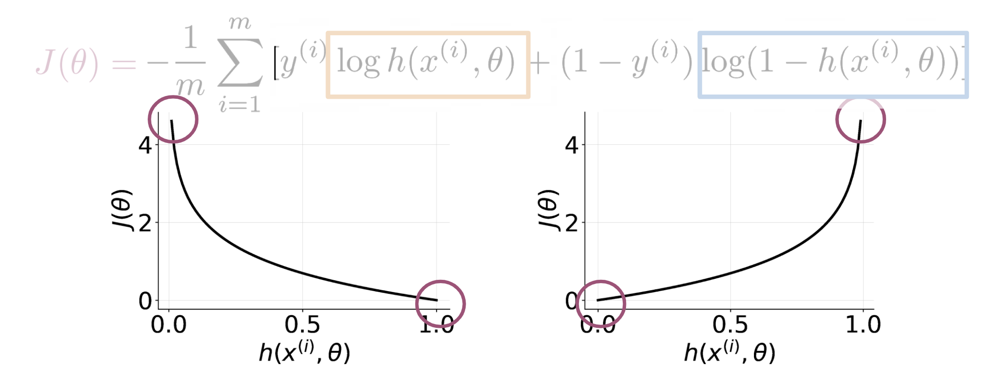

Week1: Logistic Regression
It is possible to do sentiment analysis in a much simpler way than shown in this course. Logistic regression is not as simple as ols regrsion due to having categorical features. Finaly stochastic gradient descent is not the standard way of solving logistic regression, Maximum Likelyhood Estimation is. I think they use SGD so it is more familier later in the specilization. However if you want to flatten your learning curve consder the following videos which will should help you get more confident wir logistic regression by building from the more familier OLS regression.
| video | subject |
|---|---|
| StatQuest: Logistic Regression | |
| Logistic Regression Details Pt1: Coefficients | |
| Logistic Regression Details Pt 2: Maximum Likelihood |
Table of logistic regresion tutorials
Supervised ML & Sentiment Analysis

- In supervised ML we get input features X and a corresponding set of labels Y.
- The goal is to minimize
prediction error rates, AKAcost. - To do this, one runs the prediction function which takes in parameters and map the features of an input to an output label \hat{Y}.
- The optimal mapping from features to labels is when the difference between the expected values Y and the predicted values \hat{Y} is minimized.
- The cost function F does this by comparing how closely the output \hat{Y} is to the label Y.
- Update the parameters and repeat the whole process until your cost is minimized.
- We use the sigmoid cost fucntion: ::: {#fig-slide2 .column-margin}  the sigmoid cost function ::: ## Sesntiment Analysis

| video | subject |
|---|---|
| The Secret Life of Pronouns: James Pennebaker at TEDxAustin | |
| Language of Truth and Lies: I-words | |
| LIWC-22 2022 Tutorial 1: Getting started with LIWC-22 | |
| Likelihood |
Table of logistic regresion tutorials ::: ::::
Supervised ML & Sentiment Analysis
- One example of a Supervised machine learning classification task for
sentiment analysis - The objective is to predict whether a tweet has a positive or negative sentiment. (If it is positive/optimistic or negative/pessimistic). To perform sentiment analysis on a tweet, we need to:
- represent the text e.g. “I am happy because I am learning NLP” as features,
- train a logistic regression classifier
- 1 for a positive sentiment
- 0 for negative sentiment.
- and then we use it to classify the text. ## Vocabulary & Feature Extraction ### Sparse Representation ::: {#fig-slide4 .column-margin}
 Problems with sparse representation ::: Given a tweet, or some text, one can represent it as a vector. The vector has a dimension |V|, where V corresponds to the size of the vocabulary size. If you had the tweet “I am happy because I am learning NLP”, then you would put a 1 in the corresponding index for any word in the tweet, and a 0 otherwise. ::: {#fig-slide5 .column-margin}
Problems with sparse representation ::: Given a tweet, or some text, one can represent it as a vector. The vector has a dimension |V|, where V corresponds to the size of the vocabulary size. If you had the tweet “I am happy because I am learning NLP”, then you would put a 1 in the corresponding index for any word in the tweet, and a 0 otherwise. ::: {#fig-slide5 .column-margin}  A sparse representation ::: As V gets larger, the vector becomes more sparse. Furthermore, we end up having many more features and end up training \theta_0 ... \theta_n parameters. This results in a larger training time. And the inference time increases as well. ### Feature Extraction based on class frequencies ::: {#table-tweets } |Positive tweets| Negative tweets | |—————|——————-| |I am happy because I am learning NLP |I am sad, I am not learning NLP | |I am happy |I am sad | Table of tweets :::
A sparse representation ::: As V gets larger, the vector becomes more sparse. Furthermore, we end up having many more features and end up training \theta_0 ... \theta_n parameters. This results in a larger training time. And the inference time increases as well. ### Feature Extraction based on class frequencies ::: {#table-tweets } |Positive tweets| Negative tweets | |—————|——————-| |I am happy because I am learning NLP |I am sad, I am not learning NLP | |I am happy |I am sad | Table of tweets :::
Given a corpus with positive and negative tweets we can represent it as follows: ::: {#table-vocab } |Vocabulary | PosFreq (1) | NegFreq (O) | |————|:———–:|————–| | I | 3 | 3 |
| am | 3 | 3 |
| happy | 2 | 0 |
| because | 1 | 0 |
| learning | 1 | 1 |
| NLP | 1 | 1 |
| sad | 0 | 2 |
| not | 0 | 1 |
Word class table
::: freqs: dictionary mapping from (word, class) to frequency :
\require{mathtools}
\definecolor{bayesred}{RGB}{147, 30, 24}
\definecolor{bayesblue}{RGB}{32, 35, 91}
\definecolor{bayesorange}{RGB}{218, 120, 1}
\definecolor{grey}{RGB}{128, 128, 128}
\definecolor{c1}{RGB}{114,0,172} % primary
\definecolor{c2}{RGB}{45,177,93} % true
\definecolor{c3}{RGB}{251,0,29} % false
\definecolor{c4}{RGB}{18,110,213} % secondary
\definecolor{c5}{RGB}{255,160,109} % tertiary
\definecolor{c6}{RGB}{219,78,158} % alt-primary
\underbracket[0.25pt]{X_m}_{\color{c1} \text{Features of tweet M} }=[ \underbracket[0.25pt]{1}_{\color{c4} \text{bias} } ,\sum_w
\underbracket[0.25pt]{{\color{bayesorange} freqs}(w,{\color{bayesred}1})}_{\color{bayesred} \text{Sum Pos. frequencies} } ,\sum_w
\underbracket[0.25pt]{{\color{bayesorange} freqs}(w,{\color{c2}0})}_{\color{c2} \text{Sum Neg. frequencies} }]
You have to encode each tweet as a vector. Previously, this vector was of dimension VV. Now, as you will see in the upcoming videos, you will represent it with a vector of dimension 33. To do so, you have to create a dictionary to map the word, and the class it appeared in (positive or negative) to the number of times that word appeared in its corresponding class. ## Preprocessing ::: {#fig-slide6 .column-margin}  feature extraction ::: ::: {#fig-slide7 .column-margin}  stemming ::: When preprocessing, you have to perform the following: 1. Eliminate handles and URLs 1. Tokenize the string into words. 1. Remove stop words like “and, is, a, on, etc.” 1. Stemming- or convert every word to its stem. Like dancer, dancing, danced, becomes ‘danc’. You can use porter stemmer to take care of this. 1. Convert all your words to lower case.
feature extraction ::: ::: {#fig-slide7 .column-margin}  stemming ::: When preprocessing, you have to perform the following: 1. Eliminate handles and URLs 1. Tokenize the string into words. 1. Remove stop words like “and, is, a, on, etc.” 1. Stemming- or convert every word to its stem. Like dancer, dancing, danced, becomes ‘danc’. You can use porter stemmer to take care of this. 1. Convert all your words to lower case.
Training Logistic Regression
{kind=link}
To train your logistic regression function, you will do the following: You initialize your parameter , that you can use in your sigmoid, you then compute the gradient that you will use to update , and then calculate the cost. You keep doing so until good enough ::: {#fig-slide9 .column-margin}  ::: Usually you keep training until the cost converges. If you were to plot the number of iterations versus the cost, you should see something like this: ## Testing Logistic Regression ::: {#fig-slide10 .column-margin}
::: Usually you keep training until the cost converges. If you were to plot the number of iterations versus the cost, you should see something like this: ## Testing Logistic Regression ::: {#fig-slide10 .column-margin}  ::: To test your model, you would run a subset of your data, known as the validation set, on your model to get predictions. The predictions are the outputs of the sigmoid function. If the output is ≥=0.5, you would assign it to a positive class. Otherwise, you would assign it to a negative class. To compute accuracy, you solve the following equation:
accuacy = \sum \frac{pred^{(i)}==y^{(i)}_{val}}{m}
::: To test your model, you would run a subset of your data, known as the validation set, on your model to get predictions. The predictions are the outputs of the sigmoid function. If the output is ≥=0.5, you would assign it to a positive class. Otherwise, you would assign it to a negative class. To compute accuracy, you solve the following equation:
accuacy = \sum \frac{pred^{(i)}==y^{(i)}_{val}}{m}
Cross validation note: - In reality, given your X data you would usually split it into three components. X{train}, X{val}, X{test}. - The distribution usually varies depending on the size of your data set. However, a 80%, 10%, 10% split usually works. In other words, you go over all your training examples, m of them, and then for every prediction, if it was wright you add a one. You then divide by m. ## Logistic Regression: Cost Function ::: {#fig-slide11 .column-margin}  training intuitions ::: ::: {.callout-important appearance=“simple”} ## Sigmoid We should start by developing intuition about how the cost function is designed the way it is. This is important because you will meet the sigmoid in Neural Networks, job interviews and so best make a friend of it. (GefforyHinton?) taught the full derivation of Sigmoid cost function in his course. Also the sigmoid and Logistic regression are intimtely relatted - you can’t have one without the other. :::
In plain english: “The cost function is avarege log loss across all training examples”
J( \theta)=−\frac{1}{m} \sum^m_{i=1}[y^{(i)}\log h(x^{(i)}, \theta)+(1 −y^{(i)}) \log (1−h(x^{(i)}, \theta))]
where: - m is the count of rows of your traning set. - i indexes a single row in the dataset. - x^{(i)} is the data for row i. - y^{(i)} is the gound truth AKA label for rows i. - h(x^{(i)},\theta) is the model’s prediction for row i row.
We will derive the logistic regression cost function to get the gradients.
You can see in the figure: - If y = 1 and your prediction is close to 0, you get a cost close to ∞. - The same applies when y=0 and you predict ion is close to 1. - On the other hand if you get a prediction equal to the label, you get a cost of 0.
- In either, case you are trying to minimize J(\theta)
Mathematical Derivation
To see why the cost function is designed that way, let us take a step back and write up a function that compresses the two cases into one case. If
P(y|x(i), \theta) =h(x^{(i)}, \theta)^{y^{(i)}}1−h(x^{(i)}, \theta)^{1−y^{(i)}}
From the above, you can see that when y = 1, you get h(x^{(i)}, \theta)^{y^{(i)}} and when y≈0 you ther term 1 − h(x^{(i)}, \theta)^{(1−y^{(i)})}, which makes sense, since the two probabilities equal to 1. In either case, you want to maximize the function $ h(x^{(i)}, )^{y(i)}$ by making it as close to 1 as possible.
When y ≈ 0 , you want the term 1-h(x^{(i)}, \theta)^{1−y^{(i)}} ≈ 0 which then \implies h(x^{(i)}, \theta)^{y^{(i)}} ≈ 1 When y=1, you want h(x^{(i)}, \theta)^{y^{(i)}} = 1 Now we want to find a way to model the entire data set and not just one example. To do so, we will define the likelihood as follows:
L(\theta) = \prod^m_{i=1} h(\theta, x^{(i)})^{y^{(i)}} (1−h(\theta, x^{(i)}))^{(1−y^{(i)})}
Note that if we mess up the classification of one example, we end up messing up the overall likelihood score, which is exactly what we intended. We want to fit a model to the entire dataset where all data points are related. to
\lim_{m \to \infty} L(\theta) = 0 It goes close to zero, because both h(\theta, x^{(i)})^{y^{(i)}} and (1−h(\theta, x^{(i)}))^{(1−y^{(i)})} are bounded by [0,1]. Since we are trying to maximize h(\theta, x^{(i)}) in L(\theta), we can introduce the log and just maximize the log of the function. Introducing the log, allows us to write the log of a product as the sum of each log. Here are two identities that will come in handy: \log(a*b*c) = \log(a) + \log(b) + \log(c) and \log(a^b) = b \times \log(a) Given the two identities above, we can rewrite the equation as follows: \begin{align*} \max_{ h(x^{(i)},\theta)}\log L(\theta) &= \log \prod^m_{i=1}h(x^{(i)}, \theta)^{y^{(i)}}(1−h(x^{(i)} ,\theta))^{1−y^{(i)}} \\ &= \sum^m_{i=1} \log h(x^{(i)}, \theta)^{y^{(i)}} (1−h(x^{(i)}, \theta)^{1−y^{(i)}}) \\ &= \sum^m_{i=1} \log h(x^{(i)}, \theta)^{y^{(i)}} + \log(1−h(x^{(i)}, \theta)^{1−y^{(i)}} \\ &= \sum^m_{i=1} y^{(i)}\log h(x^{(i)}, \theta) + (1−y^{(i)}) \log(1−h(x^{(i)}, \theta)) \end{align*} Hence, we now divide by m, because we want to see the average cost. \begin{align*} \frac{1}{m} \sum^m_{i=1} y^{(i)}\log h(x^{(i)}, \theta) + (1−y^{(i)}) \log(1−h(x^{(i)}, \theta)) \end{align*} Remember that we were maximizing h(\theta, x(i)) in the equation above. It turns out that maximizing an equation is the same as minimizing its negative. Think of x^2, feel free to plot it to see that for you yourself. Hence we add a negative sign and we end up minimizing the cost function as follows. \begin{align*} J(\theta)= − \frac{1}{m} \sum^m_{i=1} [y^{(i)} \log h(x^{(i)}, \theta) + ( 1 − y^{(i)}) \log ( 1 − h(x^{(i)}, \theta))] \end{align*} A vectorized implementation is: \begin{align*} & h = g(X\theta)\newline & J(\theta) = \frac{1}{m} \cdot \left(-y^{T}\log(h)-(1-y)^{T}\log(1-h)\right) \end{align*} ## Logistic Regression: Gradient \mathbf{w}(t+1) = \mathbf{w}(t) - \eta\nabla E_{in} For the case of logistic regression, the gradient of the error measure with respect to the weights, is calculated as: \nabla E_{in}\left(\mathbf{w}\right) = -\frac{1}{N}\sum\limits_{n=1}^N \frac{y_n\mathbf{x_N}}{1 + \exp\left(y_n \mathbf{w^T}(t)\mathbf{x_n}\right)} Lets look into the gradient descent in more detail, as the the gradient update rule was given without an explicitly derivation. The general form Of gradient descent is defined \begin{align*} & Repeat \; \lbrace \newline & \; \theta_j := \theta_j - \alpha \dfrac{\partial}{\partial \theta_j}J(\theta) \newline & \rbrace \end{align*} For all We Can work Out the derivative part using Calculus to get: \begin{align*} & Repeat \; \lbrace \theta_j := \theta_j - \frac{\alpha}{m} \sum_{i=1}^m ( h(x^{(i)}, \theta) - y^{(i)}) x_j^{(i)} \rbrace \end{align*}
A vectorized formulation \theta_j := \theta_j - \frac{\alpha}{m} X^T ( H(X, \theta) -Y)
Partial derivative of J(\theta)
\begin{align*} h(x)'&=\left(\frac{1}{1+e^{-x}}\right)'=\frac{-(1+e^{-x})'}{(1+e^{-x})^2}=\frac{-1'-(e^{-x})'}{(1+e^{-x})^2}=\frac{0-(-x)'(e^{-x})}{(1+e^{-x})^2}=\frac{-(-1)(e^{-x})}{(1+e^{-x})^2}=\frac{e^{-x}}{(1+e^{-x})^2} \newline &=\left(\frac{1}{1+e^{-x}}\right)\left(\frac{e^{-x}}{1+e^{-x}}\right)=h(x)\left(\frac{+1-1 + e^{-x}}{1+e^{-x}}\right)=h(x)\left(\frac{1 + e^{-x}}{1+e^{-x}} - \frac{1}{1+e^{-x}}\right)=h(x)(1 - h(x)) \end{align*} \begin{align*}\frac{\partial}{\partial \theta_j} J(\theta) &= \frac{\partial}{\partial \theta_j} \frac{-1}{m}\sum_{i=1}^m \left [ y^{(i)} log ( h(x^{(i)}, \theta) ) + (1-y^{(i)}) log (1 - h(x^{(i)}, \theta)) \right ] \newline&= - \frac{1}{m}\sum_{i=1}^m \left [ y^{(i)} \frac{\partial}{\partial \theta_j} log ( h(x^{(i)}, \theta)) + (1-y^{(i)}) \frac{\partial}{\partial \theta_j} log (1 - h(x^{(i)}, \theta))\right ] \newline&= - \frac{1}{m}\sum_{i=1}^m \left [ \frac{y^{(i)} \frac{\partial}{\partial \theta_j} h(x^{(i)}, \theta)}{ h(x^{(i)}, \theta)} + \frac{(1-y^{(i)})\frac{\partial}{\partial \theta_j} (1 - h(x^{(i)}, \theta))}{1 - h(x^{(i)}, \theta)}\right ] \newline&= - \frac{1}{m}\sum_{i=1}^m \left [ \frac{y^{(i)} \frac{\partial}{\partial \theta_j} h(x^{(i)}, \theta)}{ h(x^{(i)}, \theta)} + \frac{(1-y^{(i)})\frac{\partial}{\partial \theta_j} (1 - h(x^{(i)}, \theta))}{1 - h(x^{(i)}, \theta)}\right ] \newline&= - \frac{1}{m}\sum_{i=1}^m \left [ \frac{y^{(i)} h(x^{(i)}, \theta) (1 - h(x^{(i)}, \theta)) \frac{\partial}{\partial \theta_j} \theta^T x^{(i)}}{ h(x^{(i)}, \theta)} + \frac{- (1-y^{(i)}) h(x^{(i)}, \theta)(1 - h(x^{(i)}, \theta)) \frac{\partial}{\partial \theta_j} \theta^T x^{(i)}}{1 - h(x^{(i)}, \theta)}\right ] \newline&= - \frac{1}{m}\sum_{i=1}^m \left [ \frac{y^{(i)} h(x^{(i)}, \theta) (1 - h(x^{(i)}, \theta)) \frac{\partial}{\partial \theta_j} \theta^T x^{(i)}}{ h(x^{(i)}, \theta)} - \frac{(1-y^{(i)}) h(x^{(i)}, \theta) (1 - h(x^{(i)}, \theta)) \frac{\partial}{\partial \theta_j} \theta^T x^{(i)}}{1 - h(x^{(i)}, \theta))}\right ] \newline&= - \frac{1}{m}\sum_{i=1}^m \left [ y^{(i)} (1 - h(x^{(i)}, \theta)) x^{(i)}_j - (1-y^{(i)}) h(x^{(i)}, \theta) x^{(i)}_j\right ] \newline&= - \frac{1}{m}\sum_{i=1}^m \left [ y^{(i)} (1 - h(x^{(i)}, \theta)) - (1-y^{(i)}) h(x^{(i)}, \theta) \right ] x^{(i)}_j \newline&= - \frac{1}{m}\sum_{i=1}^m \left [ y^{(i)} - y^{(i)} h(x^{(i)}, \theta) - h(x^{(i)}, \theta) + y^{(i)} h(x^{(i)}, \theta) \right ] x^{(i)}_j \newline&= - \frac{1}{m}\sum_{i=1}^m \left [ y^{(i)} - h(x^{(i)}, \theta) \right ] x^{(i)}_j \newline&= \frac{1}{m}\sum_{i=1}^m \left [ h(x^{(i)}, \theta) - y^{(i)} \right ] x^{(i)}_j\end{align*} partial derivative Of J(B) First CalCLAate derivatüe Of Sigmoid function (it be useful while finding partial derivative Of Note that We computed the partial derivative Of the Sigmoid funttiM_ If We Were to derive , 9) with respect to Oj, you would get — Note that used the chain rule there. ’“e multiplybythe derivative Of with respect to Now we are ready to find out result.ng partial derivative; The Vectorized Version: \nabla J(\theta) = \frac{1}{m} X^T \cdot (H(X,\theta)-Y)
resources:
- derivative of cost function for Logistic Regression Convatulations. vou now know the full derivation Of logistic regression!
- https://betterexplained.com/articles/an-intuitive-and-short-explanation-of-bayes-theorem/
- file:///home/oren/Downloads/1-sentiment%20analysis%20with%20logistic%20regression.pdf
- Ibrahim Jelliti’s Notes
Reuse
Citation
@online{bochman2020,
author = {Bochman, Oren},
title = {Classification \& {Vector} {Spaces} - {Logistic}
{Regression}},
date = {2020-10-23},
url = {https://orenbochman.github.io/blog//notes/deeplearning.ai-nlp-c1/l1-logistic-regression/l1-logistic-regression.html},
langid = {en}
}